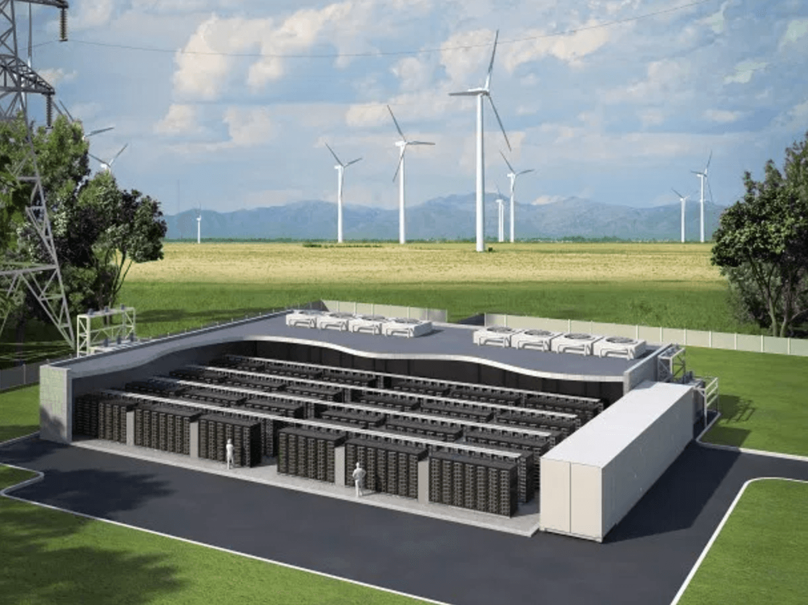

Energy storage is the superhero of the energy world, saving excess power for later use. This is crucial because renewable energy sources like solar and wind are inconsistent, while our energy needs fluctuate. Here's a breakdown of the key storage technologies:
- Electrochemical Batteries (like Lithium-ion): These champions store energy as chemical reactions and release it when needed. They're widely used in electric vehicles and renewable energy systems.
- Compressed Air Energy Storage: This method uses electricity to compress air, storing it for later use to generate electricity through turbines.
- Thermal Storage: Think giant thermoses! These systems store energy as heat and convert it to electricity or usable heat later.
- Potential Energy Storage: This category harnesses gravity (think pumped hydro) or elasticity (compressed springs) to store energy and convert it when needed.
Why is this important? Energy storage offers a sustainable future by:
- Improving Efficiency: By storing excess energy, we avoid waste and optimize grid usage.
- Balancing the Grid: It bridges the gap between energy supply and demand fluctuations.
- Supporting Renewables: It allows for large-scale integration of renewable energy sources.
Now, let's zoom in on the battery world:
The king of the castle is the Lithium-ion battery. These boast high energy density, long life, and low discharge rates, making them ideal for electric vehicles and renewable energy storage.
Sodium-ion batteries are a promising alternative. They share similarities with lithium-ion but use cheaper and more abundant sodium, making them a potential game-changer for renewable energy storage.

Other key players include:
- Li-Titanate batteries: Excellent for high-power applications like electric buses due to their fast charging capabilities.
- Lead-acid batteries: The veterans of the bunch, offering reliability and affordability for backup power and low-power storage.
- Flow batteries: These unique systems store energy in liquid electrolytes, offering scalability and flexibility.
The future of batteries is brimming with exciting possibilities:
- Lithium-sulfur batteries: Promise even higher energy density than lithium-ion.
- Solid-state batteries: These next-gen batteries offer improved safety and faster charging times.
- Metal-air batteries: These have the potential for ultra-high energy density, but are still under development.
So, You Want to Make Batteries?
The future of energy storage is bright! Here are some key areas for development:
- Increased Capacity: Pushing the boundaries of energy density to store more power in smaller units.
- Cost Reduction: Making batteries more affordable through material selection, efficient production, and recycling initiatives.
- Extended Cycle Life: More charge and discharge cycles for longer battery life and lower costs.
- Enhanced Safety: Developing safer materials and battery management systems to minimize risks.
By focusing on these areas, we can unlock the full potential of energy storage and pave the way for a sustainable energy future.